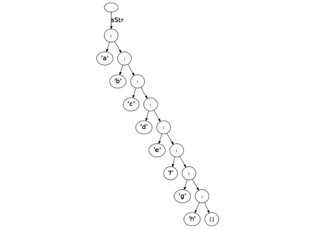
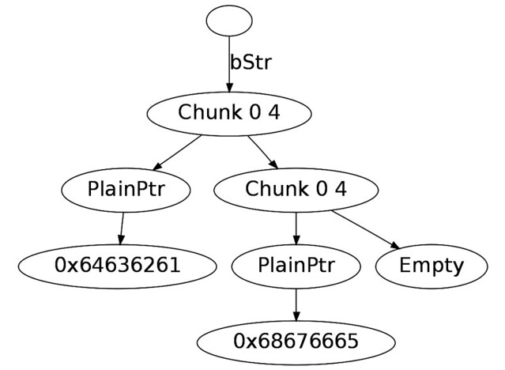

Workshop/MiracleHaskell/019-answer
回答(みんな)
回答(岡部)
まず、リストのメモリ構造については GHCのこと の代数的データ型の項目を参照のこと。
ヒープの形を比較してみる
ghc-vis を使ってヒープの形を比較してみた。
{-# LANGUAGE OverloadedStrings #-}
module MyString (bStr, sStr) where
import qualified Data.ByteString.Lazy as BL
import Data.ByteString.Char8 ()
bStr :: BL.ByteString
bStr = BL.fromChunks ["abcd", "efgh"]
sStr :: String
sStr = "abcdefgh"Stringのヒープ

単なるリスト構造。
ByteString(Lazy)のヒープ

2つのチャンクに分かれていて、チャンク同士の関係はリスト構造そのもの。 ただし、チャンクの中身は生のポインタで表現されている。